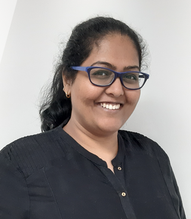

I’ve always been intrigued by hands-on experimental science and logic as it applies to everything, including history and even theology. I wouldn’t say I could see the path to engineering through this, but it became this eventually. I followed a path followed by thousands in India, getting my engineering degree just because I could. But I came to love engineering when I got to test my first engine as an engineer at Cummins. The application of the engineering I had learnt till then, along with the ability to see it all come together in real hardware made the experience exciting. It felt real. There was no looking back after that.
Who was your biggest support system during the initial days of your career?My career began away from family, friends and what I knew as a home. So, my biggest support system early on in my career became my colleagues at work who were in a similar situation as me. It very much became a work hard and play (travel in my case) hard sort of situation. I remember those times very fondly.
How do you feel being a ‘female’ mechanical engineer, since mechanical engineering is considered a very male dominated field? Have you faced any roadblocks or setbacks which might be influenced by your gender?I’ve always felt like I was a little bit of a rebel. Whether it was being in mechanical engineering in University where technicians felt that my gender meant that I could not pull my weight in a foundry and welding class or whether it was people calling to tell my parents that there was no value in girls pursuing mechanical engineering. You are taught to ignore these microaggressions and anything you do to stand up for yourself is called rebelling.
I feel absolutely splendid being a “female” mechanical engineer. It has always been amazing to see role models in the industry who strive hard at breaking the taboos. I recognize the glass ceilings, acknowledge them and use the situations to fuel me to be a better engineer. A better leader. The expectations are heavy on women who try to balance challenging work with other adult responsibilities, at least in a traditional sense, as a spouse and mother. So, I decided not to be the norm. I balance the way it makes sense for me and have a strong group of people who I can talk through the noises that try to set you back. Most importantly I have found my happy place and I plan to stick to it.
What is your job at Cummins India? What are you currently working on?I lead the design and analysis functional teams for the Engine Business Unit (EBU) in India. This is an operational engineering leadership role. I also co-lead simulation-based product development, an initiative to make our product development more simulation based, for EBU globally and for the India Technical Organisation, as a whole. I am also a strong propagator for Diversity and Inclusion as a part of my leadership journey. In this regard I am the Inclusion Champion for the Pride employee resource group, which helps create inclusion for our LGBTQ+ employees for India. I also lead the global sub-committee for Society of Women Engineers (SWE) Executive Council for Cummins Inc. and represent Cummins Inc. at the India corporate council for SWE.
When have you been the most proud of your work? / What is your greatest professional achievement?I feel like there are no single “win” moments that I associate with a sense of achievement. The journey has been amazing. There are always great and not so great days, but it feels like it is all part of the journey. The highs have included hands-on-engineering days, work with diversity groups and developing amazing people. I am very proud of the journey. I am looking forward to becoming a more mature and authentic leader as I help groom the next generation of engineers and leaders. I look forward to help nurture a workspace where people of diverse experiences come together and are powerful engineers together.
Do you have any advice for girls just starting out in the industry?My advice for girls starting off in the STEM industry is to not worry about the naysayers. You were meant to do this. It has nothing to do with your gender. It has to do with you being a good engineer. Success in engineering is not dictated by your marks or whom you know; It is completely dependent on you being passionate and committed. It has to do with you setting goals for yourself- defining your own greatness- and then working toward those goals and that greatness. Impress yourself – don’t worry about anyone else, but also recognize it that it takes everyone to make it – so help others
What are the values or principles that you never compromise on?I have my own set of values that I have done a lot of work introspecting to understand better. These align well with the values of the company I work for- the values are integrity, diversity and inclusion, caring, excellence and teamwork. These values are important to me.
I have my own set of values that I have done a lot of work introspecting to understand better. These align well with the values of the company I work for- the values are integrity, diversity and inclusion, caring, excellence and teamwork. These values are important to me.
How do you think we can promote a diverse and inclusive culture in our colleges and workplaces?In order to promote a diverse and inclusive culture, we must talk about it. The more we talk about what diversity and inclusion and the things we feel excluded about – the more inclusive we become. It is a mindset and it cannot be developed overnight. It takes a lot of openness and sometimes some unlearning. There is no preaching in this space. No one knows-it-all when it comes to understand the various perspectives each individual human being has. The best we can do is to keep trying to learn about each other’s experiences and understand how to make it all work for us together.
How can we be an ally to the LGBTQ+ community?We must talk about it. I did not understand much about this diversity spectrum in the beginning because I was just not exposed to the LBTQ+ community. I asked a lot of questions and had wonderful people who answered and explained facets of the spectrum. And be vocal – lots of people are on the fence on LGBTQ+ and it matters when we speak up. I am a proud Ally. Cummins is a proud ally. Talking about it will lead to knowledge and reduce the stigma. We need to do this. Invite speakers – there are plenty of people willing to share their LGBTQ+ life journeys and we can learn more from them.
Why did you join SWE? How has SWE benefited you?We all need to be brave in our journeys as women engineers, but we all need someone to lean on. SWE gives you this. SWE provides the tools necessary to help engineers grow in an industry that has not been the norm for women. In SWE, I find my voice as a woman leader helping other women in STEM.
Can you tell us in brief about your work as Cummins representative to the SWE India corporate council?I represent Cummins on the SWE India Corporate Council. Cummins believes SWE can help us in the journey of growing women in STEM and has been on the global Corporate Partnership Council (CPC) for many years now. When SWE decided to open a similar council for India, I was appointed as a representative. I bring the Cummins voice to the initiatives and plans that SWE has for the India STEM space. This helps Cummins and SWE develop plans to attract, develop, retain and recognize women in STEM.